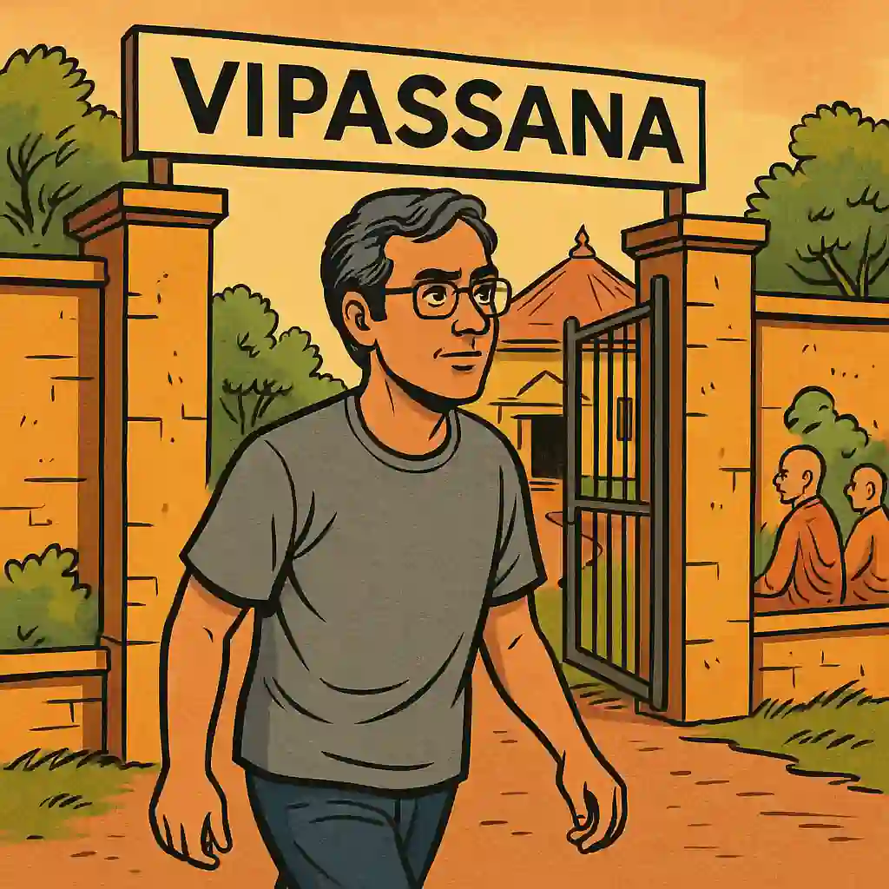

I attended a 10-day Vipassana meditation center.

Each day had 12 hours of meditation, ...
You live like a monk. It's a hostel life.
The food is basic. You wash utensils and your room.
There are rules. No phone, laptop, no communication.
You can't speak to anyone. As an introvert, I enjoyed this!
You can't kill. Sparing cockroaches and mosquitos were hard.
You can't mix meditations. But I continued daily Yoga.
You can't steal. But I did smuggle a peanut chikki out.
No intoxicants or sexual misconducts.
You're woken up by bell at 4 am daily.
You sit cross-legged without moving, which I found impossible.
I was the sole attendee who needed a backrest.
I blame back muscle loss which accompanied my weight loss.
You observe your sensations calmly.
Don't imagine sensations. Don't like or hate them.
It's pragmatic. Accept what works. Reject what doesn't.
There's no dogma. More science than religion.
I discovered several cravings and aversions

... like fear of losing money and an efficiency obsession.
Also that humor, curiosity and compassion really help.
It was 10 days well spent. I strongly recommend it.